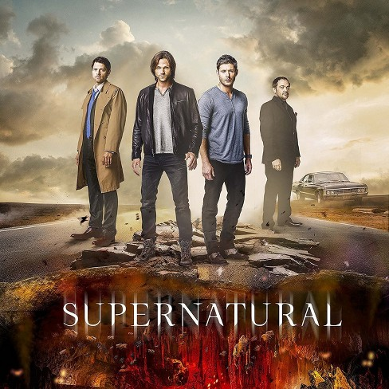
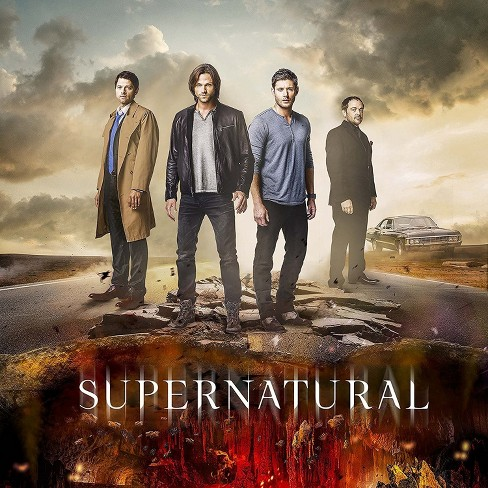

Comedy:
F.R.I.E.N.D.S

Summary: Rachel Green, Ross Geller, Monica Geller, Joey Tribbiani, Chandler Bing and Phoebe Buffay are six 20 year-olds, living off of one another in the heart of New York City. Over the course of ten years, this average group of buddies goes through massive mayhem, family trouble, past and future romances, fights, laughs, tears and surprises as they learn what it really means to be a friend.
Channel: 'Friends' aired on NBC from September 22, 1994 to May 6, 2004, lasting ten seasons. It can now be found of Netflix
Cast: Jennifer Aniston, Courtney Cox, Matthew Perry, Lisa Kudrow, Matt LeBlanc and David Schwimmer
Directors: Alan Myerson, Andrew Tsao, Arlene Sanford,David Schwimmer
Social Links:
* * * * * * * * * * * * * * * * * * * * * * * * * * * * * * * * * * * * * * * * * * * * * * * * * * * * * * * * * * * * * * * * * * * * * * * * * * * * * * * * *
Family Guy
Summary: Family Guy is an American animated sitcom created by Seth MacFarlane for the Fox Broadcasting Company. The series centers on the Griffins, a family consisting of parents Peter and Lois; their children, Meg, Chris, and Stewie; and their anthropomorphic pet dog, Brian. The show is set in the fictional city of Quahog, Rhode Island, and exhibits much of its humor in the form of metafictional cutaway gags that often lampoon American culture.
Channel: Family guy was orginally aired on Fox but shortly after the third season of Family Guy had aired in 2002, Fox canceled the series. It can now be found on Netflix.
Cast: Seth MacFarlane,Alex Borstein, Lacey Chabert and Seth Green
Directors: Quentin Tarantino, Wes Anderson, and Michael Bay
Social Links:
Horror:
Stranger Things

Summary: In a small town where everyone knows everyone, a peculiar incident starts a chain of events that leads to the disappearance of a child, which begins to tear at the fabric of an otherwise peaceful community. Dark government agencies and seemingly malevolent supernatural forces converge on the town, while a few locals begin to understand that there's more going on than meets the eye.
Channel: All 2 seasons of 'Stranger Things' can be found on Netflix.
Cast: Winona Ryder,David Harbour,Finn Wolfhard,Millie Bobby Brown,Gaten Matarazzo,Caleb McLaughlin,Natalia Dyer,Matthew Modine,Noah Schnapp and Sadie Sink
Directors: Matt Duffer,Ross Duffer,Shawn Levy,Andrew Stanton, Uta Briesewitz and Rebecca Thomas.
Social Links:
* * * * * * * * * * * * * * * * * * * * * * * * * * * * * * * * * * * * * * * * * * * * * * * * * * * * * * * * * * * * * * * * * * * * * * * * * * * * * * * * *
American Horror Story

Summary: American Horror Story is an American anthology horror television series created by Ryan Murphy and Brad Falchuk. Each season is conceived as a self-contained miniseries, following a different set of characters and settings, and a storyline with its own "beginning, middle, and end." Some plot elements of each season are loosely inspired by true events.
Channel: The series is broadcast on the cable television channel FX in the United States.
Cast: Naomi Grossman, Lily Rabe, John Cromwell,Christine Estabrook,Matt Ross,Gabourey Sidibe and Sarah Paulson
Directors: Ryan Murphy and Brad Falchuk
Social Links:
American Horror Story
Summary: American Horror Story is an American anthology horror television series created by Ryan Murphy and Brad Falchuk. Each season is conceived as a self-contained miniseries, following a different set of characters and settings, and a storyline with its own "beginning, middle, and end." Some plot elements of each season are loosely inspired by true events.
Channel: The series is broadcast on the cable television channel FX in the United States.
Cast: Naomi Grossman, Lily Rabe, John Cromwell,Christine Estabrook,Matt Ross,Gabourey Sidibe and Sarah Paulson
Directors: Ryan Murphy and Brad Falchuk
Social Links:
Romance:
Grey's Anatomy

Summary: Grey's Anatomy is an American medical drama television series. The fictional series focuses on the lives of surgical interns, residents, and attending physicians, as they develop into seasoned doctors while trying to maintain personal lives and relationships.
Channel: Can be found on Netflix.
Cast: Meredith Grey,Cristina Yang,Izzie Stevens,Alex Karev,George O'Malley,Miranda Bailey,Preston Burke,Derek Shepherd,Addison Montgomery,Callie Torres and Mark Sloan.
Directors: Debbie Allen, Kevin McKidd, Kevin Rodney Sullivan, Cecille A.Mosli and Rob Hardey.
Social Links:
* * * * * * * * * * * * * * * * * * * * * * * * * * * * * * * * * * * * * * * * * * * * * * * * * * * * * * * * * * * * * * * * * * * * * * * * * * * * * * * * *
How I Met Your Mother
Summary: The series follows the main character, Ted Mosby and his group of friends in New York City's Manhattan. As a framing device, Ted, in the year 2030, recounts to his son and daughter the events that led him to meet their mother.
Channel: originally aired on CBS from September 19, 2005, to March 31, 2014.
Cast: Josh Radnor, Jason Segel,Cobie Smulders,Neil Patrick Harris,Alyson Hannigan,Cristin Milioti and Bob Saget.
Directors: Craig Thomas and Carter Bays
Social Links:
How I Met Your Mother
Summary: The series follows the main character, Ted Mosby and his group of friends in New York City's Manhattan. As a framing device, Ted, in the year 2030, recounts to his son and daughter the events that led him to meet their mother.
Channel: originally aired on CBS from September 19, 2005, to March 31, 2014.
Cast: Josh Radnor, Jason Segel,Cobie Smulders,Neil Patrick Harris,Alyson Hannigan,Cristin Milioti and Bob Saget.
Directors: Craig Thomas and Carter Bays
Social Links:
Romance:
Orange Is The New Black
Summary: When Piper Kerman is twenty-four (in 1993) she hooks up with a chic lesbian drug dealer named Nora Jansen and helps her smuggle money across borders in Europe. Over the next few months, Piper goes through prison orientation, makes some friends, and gets tons of mail and visitors.
Channel: All 6 Seasons of'Orange is The New Black can be found of Netflix
Cast: Taylor Schilling,Laura Prepon,Michael Harney,Michelle Hurst,Kate Mulgrew,Jason Biggs,Uzo Aduba,Danielle Brooks,Natasha Lyonne,Taryn Manning.
Directors: Jenji Kohan
Social Links:
* * * * * * * * * * * * * * * * * * * * * * * * * * * * * * * * * * * * * * * * * * * * * * * * * * * * * * * * * * * * * * * * * * * * * * * * * * * * * * * * *
Supernatural

Summary: his television drama is about the two Winchester brothers, Sam and Dean, who were raised by their father, John, to hunt and kill all things that go "bump in the night" after his wife, Mary, was murdered by an evil supernatural being when the boys were young.
Channel: Supernatural
Cast: Jared Padalecki,Jensen Ackles,Katie Cassidy,Lauren Cohan,Misha Collins,Mark A. Sheppard,Mark Pellegrino and Alexander Calvert
Directors: Eric Kripke
Social Links:
Supernatural

Summary: his television drama is about the two Winchester brothers, Sam and Dean, who were raised by their father, John, to hunt and kill all things that go "bump in the night" after his wife, Mary, was murdered by an evil supernatural being when the boys were young.
Channel: Supernatural
Cast: Jared Padalecki,Jensen Ackles,Katie Cassidy,Lauren Cohan,Misha Collins,Mark A. Sheppard,Mark Pellegrino and Alexander Calvert
Directors: Eric Kripke
Social Links: